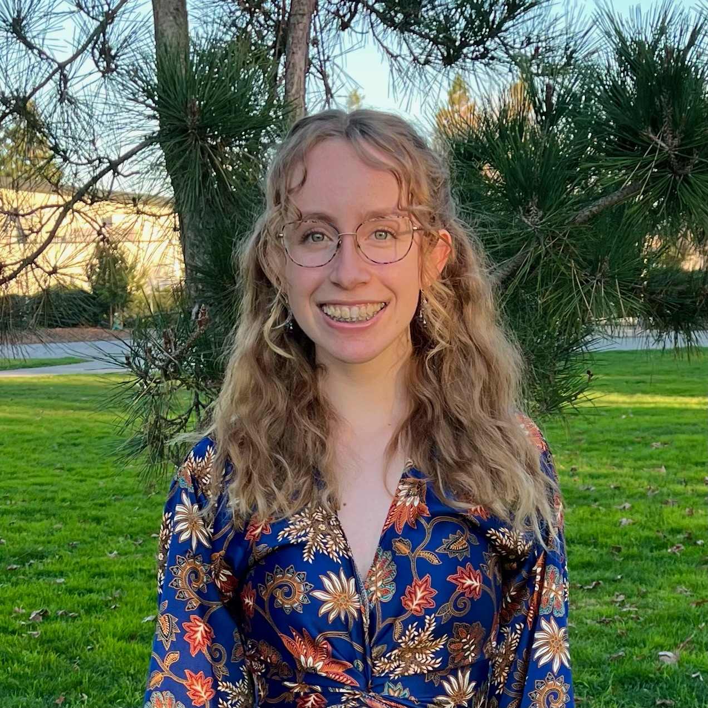

Research in the Shea group focuses on developing and applying the techniques of statistical and computational physics to the study of biological problems. Current work involves the investigation of cellular processes such as in-vivo protein folding and protein aggregation.
I study the effects of cosolvents on proteins. We are interested in understanding the effects of cellular components on the conformational stability and aggregation propensities of intrisically disordered proteins (IDPs). I have particular interest in the behavior of the IDP tau protein, associated with the pathology of Alzheimer's disease.
Laos, V.; Bishop, D., Ganguly; Schonfeld, G.; Trapp, B.; Lazar Cantrell, K.; Buratto, S.; Shea, J.-E.; Bowers, M. J. Am. Chem. Soc. 2021, 143 (9), 3494-3502
Terminal capping of an amyloidogenic Tau fragment modulates its fibrillation propensityArya, S.; Ganguly, P.; Arsiccio, A.; Claud, S. L.; Trapp, B.; Schonfeld, G. E.; Liu, X.; Lazar Cantrell, K. L.; Shea, J.-E.; Bowers, M. T. J. Phys. Chem. B 2020, 124 (40), 8772-8783.
pganguly@chem.ucsb.edu ∘ Website
My work uses molecular dynamics to study how mussels use specialized foot proteins (mfps) to attach to mineral surfaces. I also am developing force fields to produce better models of N-substituted glycine oligomers, peptoids, which are of interest due to their protease resistance and high stability compared to peptides.
Wonderly, W. R.; Cristiani, T. R.; Cunha, K. C.; Degen, G. D.; Shea, J.-E.; Waite, J. H. Macromolecules 2020, 53 (16), 6767-6779.
Significant performance enhancement of polymer resins by bioinspired dynamic bondingSeo, S.; Lee, D. W.; Ahn, J. S.; Cunha, K.; Ju, S. W.; Shin, E.; Kim, B.-S.; Levine, Z. A.; Lins, R. D.; Israelachvili, J. N.; Waite, J. H.; Shea, J.-E.; Ahn, B. K. Adv. Mater. 2017, 29 1703026.
kcunha@chem.ucsb.edu ∘ LinkedIn
Simulations in the context of physical chemistry can generate large quantities of data warranting modern approaches in machine learning and data science to model these complex physical systems. I am interested in these computational and other physics-based approaches to model chemical and biological systems. I obtained my Bachelor of Science in Physics in 2018 from the University of California: Santa Barbara, working as an undergraduate in the Shea group under the guidance of Nathaniel Charest and Dr. Joan-Emma Shea on machine learning approaches to model the self-assembly of coarse-grained peptides. I then worked at SLAC National Accelerator Laboratory in Menlo Park, CA starting in 2018, initially under the guidance of Dr. Claudio Pellegrini to optimize the undulator profile of the Free Electron Laser at LCLS to maximize photon output power, and later as a controls engineer supporting user experiments and designing motion control systems for LCLS instruments. I then joined the Shea group as a graduate student in Chemistry in the Fall of 2021 with a focus in physical chemistry.
sheppard@chem.ucsb.edu ∘ LinkedIn
I study Intrinsically Disordered Proteins (IDPs). Nearly 50% of all human proteins are disordered or have extensive disordered regions. I primarily study the tau protein, which misfolds in Alzheimer's disease and CTE (the concussion disease). I use various computational techniques such as molecular dynamics simulations to study fragments of the tau protein. I obtained a Bachelor of Science in Chemical Engineering from Northwestern University in 2018, working as an undergraduate researcher in the Stupp Lab studying the self-assembly of peptide amphiphiles. I was a high school physics teacher at Providence Cristo Rey High School for 2 years after undergrad. I am jointly advised by Scott Shell and Joan-Emma Shea; I joined the Shell Lab and Shea Lab in the Fall of 2020.
lobo@ucsb.edu ∘ LinkedIn
My research interests lay at the intersection of field theory and statistical mechanics. I began my graduate studies in high-energy physics, and later developed an interest in the physics of biological systems (Systems of biopolymers, in particular). I was delighted to find that many of the insights from physics carry over to statistical field theory in light of the Wick rotation. My current work focuses on performing field theoretic simulations of intrinsically disordered proteins and understanding their properties in the context of liquid-liquid phase separation.
aechavez@ucsb.edu

lenawessel@ucsb.edu
dcha@ucsb.edu
leifgriem@umail.ucsb.edu
matthew_unger@ucsb.edu
samuel_hsieh@umail.ucsb.edu
My work features the use of machine learning techniques to extract insights from biopolymer primary sequences and molecular dynamics outputs. Prior collaborations have included work on detection of amyloid propensity using mass spectrometry methods and exploring methods of solvation simulation with coarse grained models. I am currently pursuing applications of information theory to capture the complex interactions of genotype and phenotype within ribozymes as part of a collaboration with Dr. Irene Chen's group at UCLA. We are doing this to develop better methods of characterizing how ribozymes acquire there biochemical activities and understand how to navigate the sequence spaces that define the function of these evolution-relevant biopolymers. I am always looking for new collaborations that will allow me to analyze high-quality data!
Charest, N.; Tro, M.; Bowers, M. T.; Shea, J.-E. J. Phys. Chem. B 2020, 124 (37), 8012-8022
The classifying autoencoder: Gaining insight into amyloid assembly of peptides and proteinsTro, M. J.; Charest, N.; Taitz, Z.; Shea, J.-E.; Bowers, M. T. J. Phys. Chem. B 2019, 123, 5256-5264.
ncharest@ucsb.edu ∘ LinkedIn
We use simulation and theory to predict phase behavior of polymeric systems ranging from synthetic to bio macromolecules. Polymer liquid-liquid phase separation (LLPS) is critically important in formation of membrane-less organelles and design of artificial complexes with particular functions, which can be used in biotechnical and biomedical applications such as drug confinement and its targeted delivery. One of our main areas of interest is to understand Tau LLPS and aggregation that is known to be critically associated with several neurodegenerative diseases. The challenges associated with characterizing the collective properties are particularly acute in Tau, where a broad range of intra- and intermolecular interactions make it elusive to link subtle residue level information to mesoscopic assemblies. We employ a combination of field-theoretic simulations (FTS), and enhanced sampling techniques such as replica exchange molecular dynamics (REMD) and indirect umbrella sampling (INDUS) to determine Tau phase behavior and understand the molecular mechanisms that lead to Tau self-assembly. Additionally, we are interested in classifying the toxicity level of Tau oligomers/fibers by characterizing the hydrophobicity strength that is presumably associated with the surface topography of the Tau complex and its chemical context.
Saeed Najafi, Yanxian Lin, Andrew P. Longhini, Xuemei Zhang, Kris T. Delaney, Kenneth S. Kosik, Glenn H. Fredrickson, Joan-Emma Shea, Songi Han Prot. Sci. 2021, 30 (7)
Amyloid Oligomers: A Joint Experimental/Computational Perspective on Alzheimer's Disease, Parkinson's Disease, Type II Diabetes and Amyotrophic Lateral Sclerosis.Nguyen, P. H.; Ramamoorhty, A.; Sahoo, B.; Zheng, J.; Chiricotto, M.; Straub, J. E.; Dominguez, L.; Shea, J.-E.; Dokholyan, N.; De Simone, A.; Ma, B.; Nussinov, R.; Najafi, S.; McCarty, J.; Loquet, A.; Faller, P.; Ganguly, P.; Ngo, S. T.; Li, M. S.; Hall, C.; Wang, Y.; Miller, Y.; Melchionna, S.; Habenstein, B Chem Rev 2021, 121 (4), 2545-2647
snajafi@ucsb.edu ∘ LinkedIn